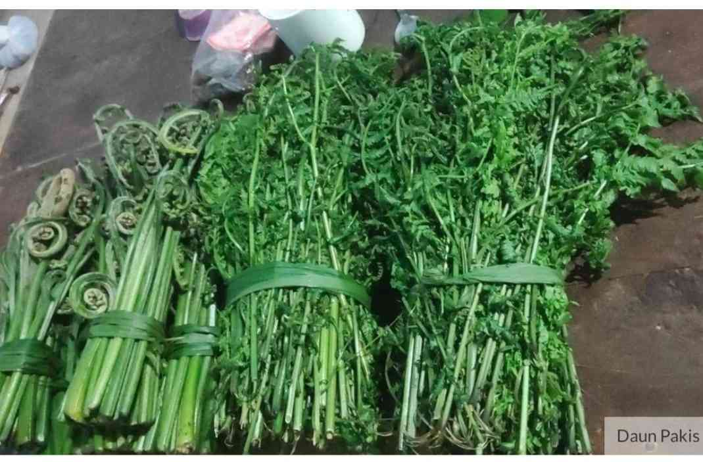
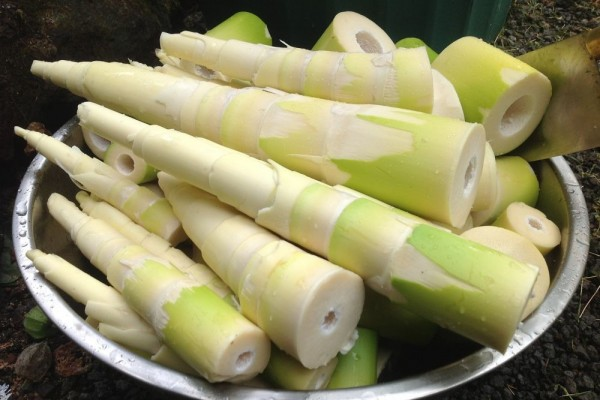
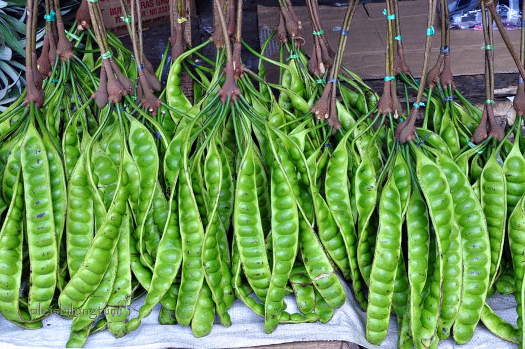
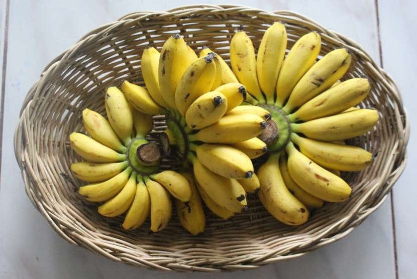

Produk
Mohon Perhatian!! Sebelum Membeli Produk Tersebut, Alangkah Baiknya Pembeli Pergi Ke Halaman Cara Penggunaannya Agar Pembeli Tidak Bingung Menggunakan Website Ini.
Terima Kasih Atas Perhatiannya
SELAMAT BERBELANJA

PUCUK PAKU

PUCUK UBI

REBUNG

PETAI

PISANG

DAUN KESUM
© 2024 Kedai Kak Yan